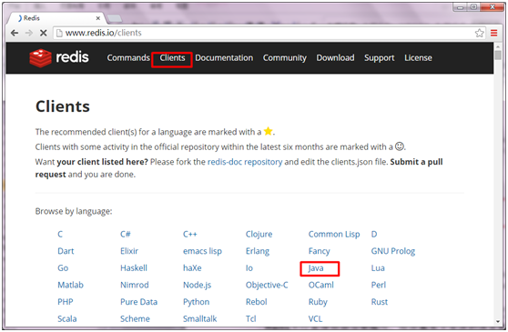
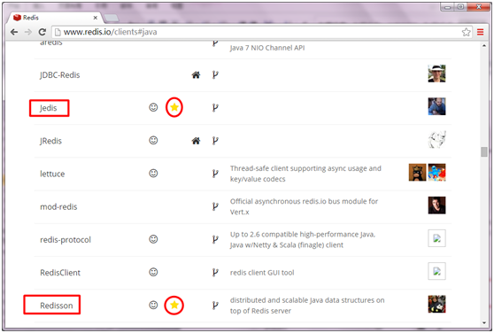
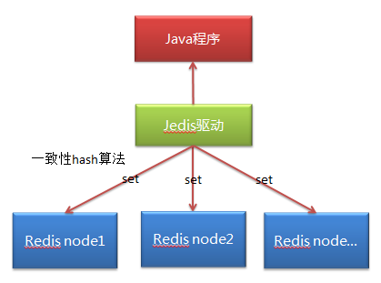
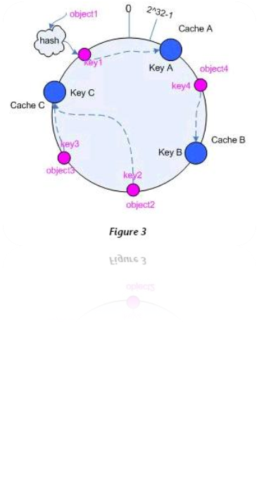

redis分片
本文于341天之前发表，文中内容可能已经过时。
什么是分片
分片就是可能一台redis的内存不够用，这个时候不想升级配件的情况下，配置redis集群，同过redis分片，把数据存储到
不同的redis服务器里面。
安装两个服务
打开6379端口
/sbin/iptables -I INPUT -p tcp --dport 6379 -j ACCEPT
/etc/rc.d/init.d/iptables save #修改生效
/etc/init.d/iptables status #查看配置
复制改端口无需再次安装
只需要复制配置文件，启动时选择配置文件即可。
cd /usr/local/src/redis/redis.2.8.17
cp redis.conf redis6380.conf
vi redis6380.conf #修改端口为6380
redis-server redis6380.conf
注意：启动后，会残留些数据，不完全，必须flushall清除掉。
简洁开启实例
redis-server --port 6300 --daemonize yes
开放远程访问
redis.conf中bind默认绑定127.0.0.1，只有本地可以访问。
ps -ef |grep redis
root 2545 2532 005:51 pts/0 00:00:07 redis-server *:6379
root 2710 2674 006:14 pts/2 00:00:05 redis-server 127.0.0.1:6479
讲bind 127.0.0.1注释掉，前面加个#即可
root 2545 2532 005:51 pts/0 00:00:07 redis-server *:6379
root 2710 2674 006:14 pts/2 00:00:05 redis-server *:6479
变成两个*即可远程访问，可以看出默认的redis.conf和复制后的文件还是有差异的。是个坑啊。
Redis分片


访问redis的驱动包。
使用最为广泛的是Jedis和Redisson（官方推荐），在企业中采用最多的是Jedis，我们重点学习Jedis。
Jedis官网地址：https://github.com/xetorthio/jedis
第一个jedis示例
package redis;
import java.util.List;
import redis.clients.jedis.Jedis;
public class TestRedis {
public static void main(String[] args) {
//设置连接服务器IP地址和访问端口
Jedis jedis = new Jedis("192.168.115.115",6379);
//单个值
//jedis.set("test", "456789"); //设置值
//System.out.println(jedis.get("test")); //获取值
//多个值
//jedis.mset("test1","1","test2","2");
List<String> oList = jedis.mget("test1","test2");
for(String s : oList){
System.out.println(s);
}
jedis.close(); //关闭
}
}
命令窗口：
127.0.0.1:6379> keys *
1) "bomb"
127.0.0.1:6379> get bomb
"tnt"
127.0.0.1:6379>
连接池JedisPool创建jedis连接
package cn.redis;
import redis.clients.jedis.Jedis;
import redis.clients.jedis.JedisPool;
import redis.clients.jedis.JedisPoolConfig;
public class JedisPoolDemo {
public static void main(String[] args) {
// 构建连接池配置信息
JedisPoolConfig jedisPoolConfig = new JedisPoolConfig();
// 设置最大连接数
jedisPoolConfig.setMaxTotal(200);
// 构建连接池
JedisPool jedisPool = new JedisPool(jedisPoolConfig, "127.0.0.1", 6379);
// 从连接池中获取连接
Jedis jedis = jedisPool.getResource();
// 读取数据
System.out.println(jedis.get("bomb"));
// 将连接还回到连接池中
jedisPool.returnResource(jedis);
// 释放连接池
jedisPool.close();
}
}
分片ShardedJedisPool
实现分布式缓存，Redis多个节点的透明访问
@Test //分片
public void shard(){
//构造各个节点链接信息，host和port
List<JedisShardInfo> infoList = new ArrayList<JedisShardInfo>();
JedisShardInfo info1 = new JedisShardInfo("192.168.163.200",6379);
//info1.setPassword("123456");
infoList.add(info1);
JedisShardInfo info2 = new JedisShardInfo("192.168.163.200",6380);
infoList.add(info2);
JedisShardInfo info3 = new JedisShardInfo("192.168.163.200",6381);
infoList.add(info3);
//分片jedis
JedisPoolConfig config = new JedisPoolConfig();
config.setMaxTotal(500); //最大链接数
ShardedJedisPool pool = new ShardedJedisPool(config, infoList);
//ShardedJedis jedis = new ShardedJedis(infoList);
ShardedJedis jedis = pool.getResource(); //从pool中获取
for(int i=0;i<10;i++){
jedis.set("n"+i, "t"+i);
}
System.out.println(jedis.get("n9"));
jedis.close();
}
原理

在分布式集群中，对机器的添加删除，或者机器故障后自动脱离集群这些操作是分布式集群管理最基本的功能。如果采用常用的hash(object)%N算法，那么在有机器添加或者删除后，很多原有的数据就无法找到了，这样严重的违反了单调性原则。
hash一致性算法
一致性哈希算法在1997年由麻省理工学院提出。
hash取余产生的问题：新增节点、删除节点会让绝大多数的缓存失效，除了导致性能骤降外很有可能会压垮后台服务器。
解决点一：
集群中节点挂掉或新增节点的时候，要对已有节点的影响降到最小。其解决思路，就是对缓存的object和Node使用同一个hash函数(实际不需要完全一致，但至少保证产生的hash空间相同)，让他们映射到同一个hash空间中去，当然这很容易实现，因为大多数的hash函数都是返回uint32类型，其空间即为1~232 232-1（2^32 = 4 294 967 296，近43亿）。然后各个Node就将整个hash空间分割成多个interval空间，然后对于每个缓存对象object，都按照顺时针方向遇到的第一个Node负责缓存它。通过这种方法，在新增加Node和删除Node的时候，只会对顺时针方向遇到的第一个Node负责的空间造成影响，其余的空间都仍然有效。

虽然虚拟并不能百分百的解决缓存命中失效的问题，但把问题缩小化，这样影响面小，即使缓存失效，数据库也能承受起用户的负载，从而稳定过渡。
扩展：如何缩短key？
这么多对象的代表，我们熟知在spring框架中，我们保存spring的上下文时，是一个很长的KEY，那这样的KEY很多时，会导致内存过多的占用，同时这种自定义规则，也很难保证不冲突。如何找到一个规则能让他们避免重复呢？
md5/hashCode
jedis和Spring整合访问redis
整合步骤
- 引入依赖
- 整合配置文件applicationContext-redis.xml
- 伪service
注入伪service
配置文件
applicationContext-redis.xml
<list> <!-- 第一个节点 --> <bean class="redis.clients.jedis.JedisShardInfo"> <constructor-arg index="0" value="${redis.node1.ip}"/> <constructor-arg type="int" index="1" value="${redis.node1.port}"/> </bean> <!-- 第二个节点 --> <bean class="redis.clients.jedis.JedisShardInfo"> <constructor-arg index="0" value="${redis.node2.ip}"/> <constructor-arg type="int" index="1" value="${redis.node2.port}"/> </bean> <!-- 第三个节点 --> <bean class="redis.clients.jedis.JedisShardInfo"> <constructor-arg index="0" value="${redis.node3.ip}"/> <constructor-arg type="int" index="1" value="${redis.node3.port}"/> </bean> </list>
redis.properties
redis.maxTotal=50
redis.node1.ip=127.0.0.1
redis.node1.port=6379
#redis.node2.ip=127.0.0.1
#redis.node2.port=6380伪Service
package com.jt.manage.service;
import org.springframework.beans.factory.annotation.Autowired;
import redis.clients.jedis.ShardedJedis;
import redis.clients.jedis.ShardedJedisPool;public class RedisService {
@Autowired
private ShardedJedisPool shardedJedisPool;//保存数据到redis中
public String set(String key, String value){ShardedJedis shardedJedis = null; try{ // 从连接池中获取到jedis分片对象 shardedJedis = shardedJedisPool.getResource(); return shardedJedis.set(key, value); } catch (Exception e){ e.printStackTrace(); } finally { if (null != shardedJedis){ //关闭，检测连接是否有效，有效则放回到连接池中，无效则重置状态 shardedJedis.close(); } } return null;}
//从redis获取数据
public String get(String key){ShardedJedis shardedJedis = null; try{ // 从连接池中获取到jedis分片对象 shardedJedis = shardedJedisPool.getResource(); return shardedJedis.get(key); } catch (Exception e){ e.printStackTrace(); } finally { if (null != shardedJedis){ //关闭，检测连接是否有效，有效则放回到连接池中，无效则重置状态 shardedJedis.close(); } } return null;}
}*重构RedisService
两个方法有很多重复代码，如何消除呢？
类似js中的回调来解决。目的简化代码，抽取公用逻辑。
com.jt.common.service.Function<E, T>
package com.jt.common.service;public interface Function<E, T> {
public T execute(E e);
}
com.jt.common.service.RedisService
package com.jt.manage.service;import org.springframework.beans.factory.annotation.Autowired;
import redis.clients.jedis.ShardedJedis;
import redis.clients.jedis.ShardedJedisPool;public class RedisService {
@Autowired
private ShardedJedisPool shardedJedisPool;//保存数据到redis中
private <E,T>T execute(Function<ShardedJedis,T> function){
ShardedJedis shardedJedis = null;try{
// 从连接池中获取到jedis分片对象 shardedJedis = shardedJedisPool.getResource(); return function.execute(shardedJedis);} catch (Exception e){
e.printStackTrace();} finally {
if (null != shardedJedis){ //关闭，检测连接是否有效，有效则放回到连接池中，无效则重置状态 shardedJedis.close(); }}
return null;
}//保存数据到redis中
public String set(final String key, final String value){
return this.execute(new Function<ShardedJedis, String>() {@Override public String execute(ShardedJedis shardedJedis) { return shardedJedis.set(key, value); }});
}//保存数据到redis中，并设置生存时间
public String set(final String key, final String value, final Integer seconds){
return this.execute(new Function<ShardedJedis, String>() {@Override public String execute(ShardedJedis shardedJedis) { String result = shardedJedis.set(key, value); shardedJedis.expire(key, seconds); //设置生存时间 return result; }});
}//从redis获取数据
public String get(final String key){
return this.execute(new Function<ShardedJedis, String>() {@Override public String execute(ShardedJedis shardedJedis) { return shardedJedis.get(key); }});
}//设置key的生存时间，单位：秒
public Long expire(final String key, final Integer seconds){
return this.execute(new Function<ShardedJedis, Long>(){@Override public Long execute(ShardedJedis shardedJedis) { return shardedJedis.expire(key, seconds); }});
}//删除key
public Long del(final String key){
return this.execute(new Function<ShardedJedis, Long>(){@Override public Long execute(ShardedJedis shardedJedis) { return shardedJedis.del(key); }});
}
}缓存的作用
存在项目中或者系统中，分担底层数据库的压力。缓存是不能影响业务逻辑的。比如说缓存服务器宕机了，能说因为缓存服务器宕机了，业务走不下去了。这种理由当然不行。缓存一定不能影响正常的业务逻辑的执行。
 支付宝打赏
支付宝打赏
 微信打赏
微信打赏
如果文章对你有帮助，欢迎点击上方按钮打赏作者